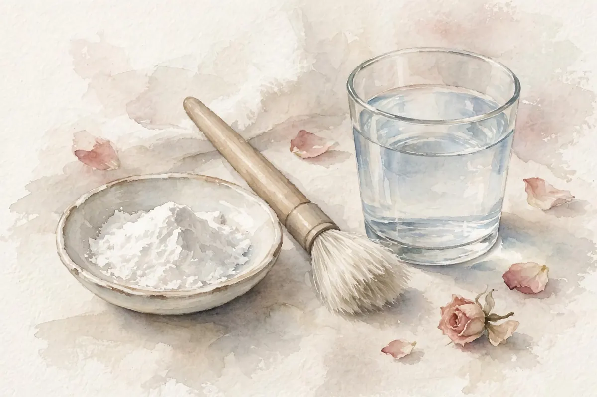

粉末洗顔の表示と使う頻度の目安

粉末洗顔というと、少し手間のかかる洗顔料という印象があるかもしれません。粉を手に取り、水を加えて泡立ててから使うタイプです。施術の現場でも、肌の調子や季節に合わせて、泡タイプやジェルタイプと使い分けているお客様がいます。粉末洗顔は、使い方の段取りと頻度の考え方が、ほかの洗顔料と少し違います。この記事では、粉末洗顔のパッケージの表示の読み方と、使う頻度の目安を整理します。特定の商品の話ではなく、粉末という形の洗顔料の使い方の考え方です。
粉末洗顔の仕組みと、表示で見るポイント
粉末洗顔は、水分を含まない粉の状態で販売されている洗顔料です。使うときに水を加えて泡立てます。粉のままでは泡立たないので、使う直前に水と混ぜる、という段取りが基本です。パッケージには、粉の量の目安と、加える水の量の目安が書かれていることが多いです。まずはその表示通りの量から始めるのが、無理のないやり方です。
表示で確認したいのは、まず「1回分の目安」です。粉の量は、さじですくうタイプもあれば、1回分ずつ個包装になっているタイプもあります。個包装の場合は、1包が1回分という設計です。さじタイプの場合は、付属のさじですくう量が目安として書かれています。次に、泡立ての案内です。「水を加えてよく泡立てる」「手のひらで泡立てる」といった手順が書かれている場合は、その通りに進めます。最後に、洗い流しの案内です。すすぎの回数や、ぬるま湯を使うといった注意が書かれている場合は、それに従います。
泡立て方と、使う量の目安
粉末洗顔の泡立ては、水の量で決まります。水が多すぎると泡がゆるくなり、少なすぎると粉が残ってしまいます。表示通りの水の量で、手のひらに粉をのせ、少しずつ水を加えながら泡立てます。泡立てネットを使うと、泡が立ちやすくなります。ネットを使う場合は、ネットをあらかじめぬらしておき、粉をのせてから水を少しずつ加えます。
泡の目安は、手のひらを返しても落ちにくい、もっちりとした泡です。泡が立ったら、泡を肌にのせるようにして洗います。粉が残っていると、肌に粉の粒が当たる感触があります。粒の感触があるときは、泡立てが足りないか、水の量が少ないことが考えられます。その場合は、もう一度水を少し加えて泡立て直します。洗うときは、泡で包むようにして、こすらずに進めます。洗い流すときは、ぬるま湯で、泡が残らないようにすすぎます。髪の生え際やあごの下は、泡が残りやすい場所です。
使う頻度の考え方と、ほかの洗顔料との使い分け
粉末洗顔を毎日使うかどうかは、肌の感触と、その商品の表示で決めます。パッケージに「毎日使える」「週に数回」といった頻度の案内がある場合は、まずそれに従います。頻度の表示がない場合は、肌の感触を見ながら、週に数回から始めて、様子を見るという進め方が無理のないやり方です。洗ったあとに肌がつっぱる感じが続く場合は、頻度を減らすか、量を少なめにしてみてください。
ほかの洗顔料との使い分けも、場面で考えます。粉末洗顔は、泡立てる段取りがある分、時間に余裕のある日に向いています。朝の忙しい時間は泡タイプ、夜のゆっくりした時間に粉末タイプ、というように、時間帯で分けるお客様もいます。旅行や出張のときは、個包装の粉末タイプが持ち運びやすい、という声もあります。反対に、肌の調子がゆらぎやすい時期は、洗顔料を変えずに、使い慣れたものにしておく、という選択肢もあります。
保管の段取りも、粉末洗顔ならではの確認点です。粉は湿気に弱いので、フタをしっかり閉めて、湿気の多い場所を避けて保管します。個包装の場合は、開封した包はその場で使い切るのが基本です。粉が固まってしまったり、色やにおいが変わったりした場合は、無理に使わずに処分を考えてください。肌の状態で気になることが続く場合は、皮膚科などの専門家に相談してください。この記事は粉末洗顔の使い方の案内であり、商品ごとに表示がある場合は、そちらが優先です。
セラフィナ「粉は水の量で泡が変わるよ。まずは表示通りの量から試してみて」

セラフィナ｜美容の道具箱の案内役
「量と表示が分かれば、美容は失敗しない。」——セラフィナと白猫のモコが、買う前のチェックポイントを案内します。綺麗になりたい気持ちに正直に、でも表示は冷静に読むのが、このサイトの約束です。